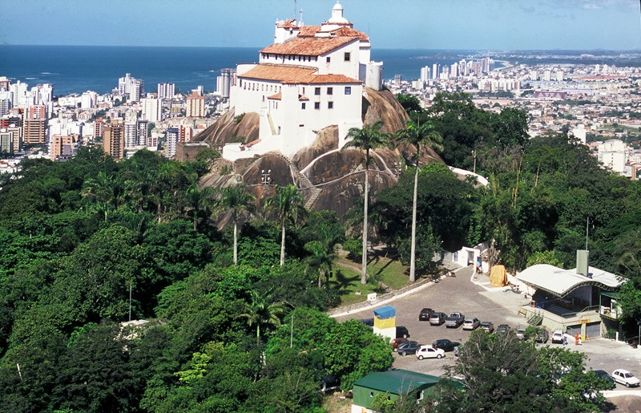

Clique aqui para voltar a página inicial
Vila Velha é a cidade mais antiga do Espírito Santo, fundada em 1535, e faz parte da Região Metropolitana de Vitória. Conhecida pelo icônico Convento da Penha, belas praias como Praia da Costa e Itaparica, além de forte turismo, comércio e a fábrica da Chocolates Garoto.
